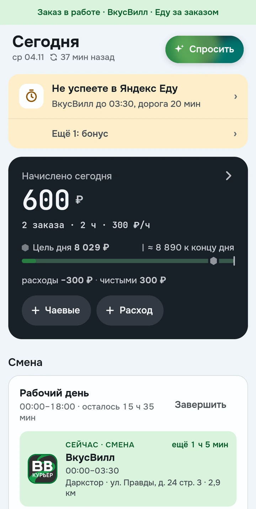
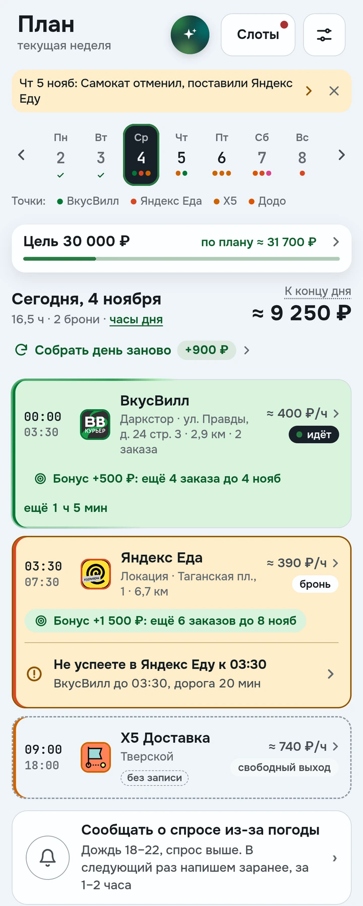
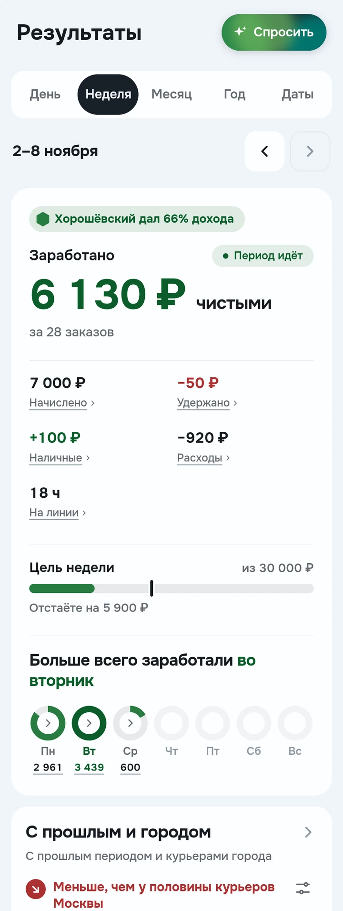
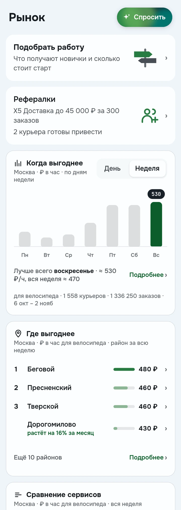
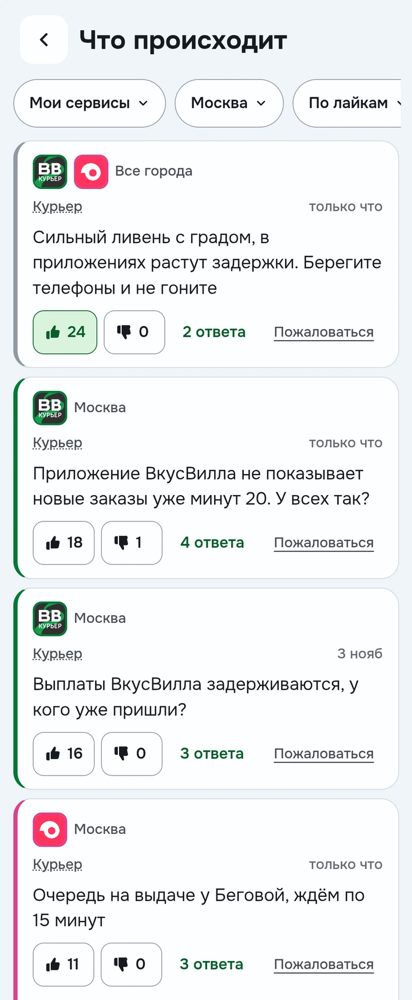

Разнос: вся работа в одном приложении
Настоящие экраны Android-приложения с демонстрационными данными Москвы
День в одном месте
Текущая смена, заказы и ожидаемые выплаты собираются на экране Сегодня

План на рабочую неделю
Слоты нескольких сервисов, цель и предупреждения о пересечениях помогают видеть свой рабочий день

Доход с учётом расходов
Результаты показывают начисления, чаевые, удержания, расходы и время за выбранный период

Сервисы и районы
Рынок помогает сравнить сервисы, районы и время, посмотреть отзывы и условия работы

Курьеры рядом
Лента сообщений, вопросы и обсуждения помогают обмениваться опытом

Демонстрационные числа не являются обещанием заработка или подтверждением реальных платежей